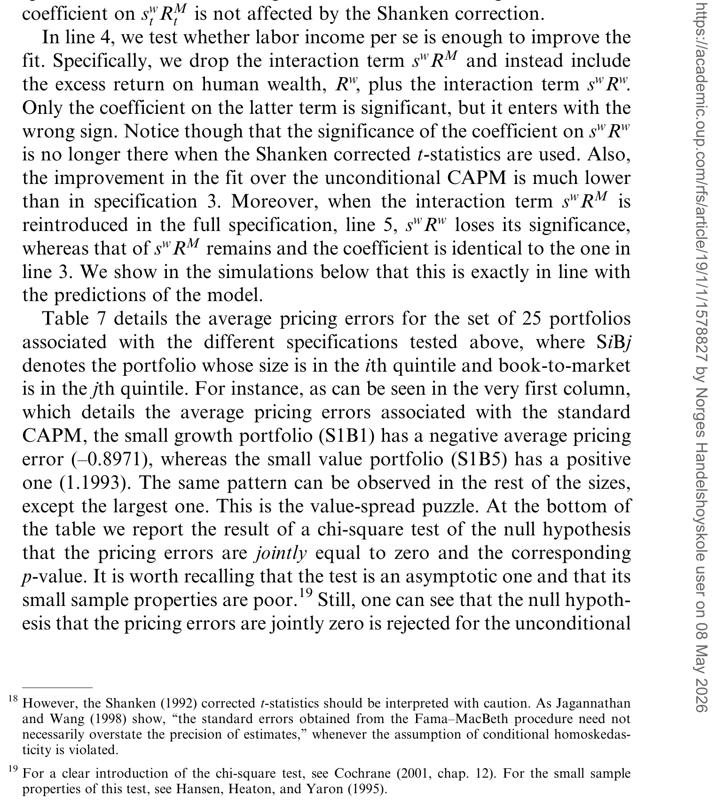
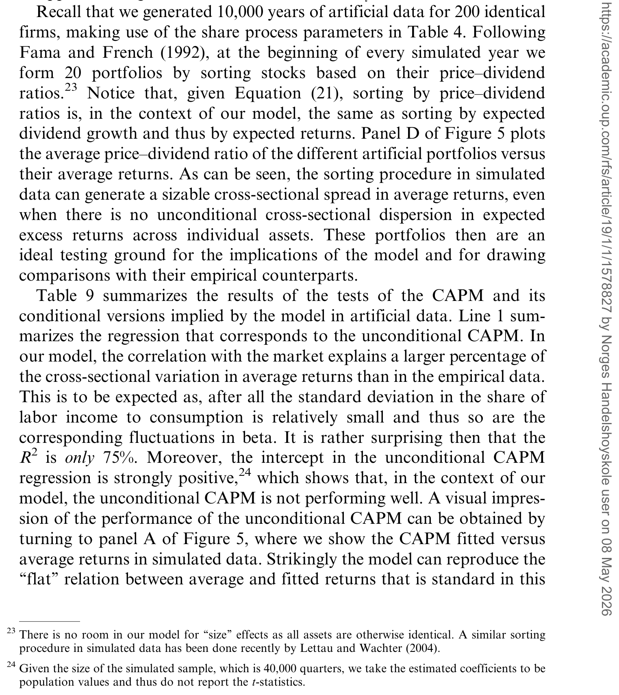
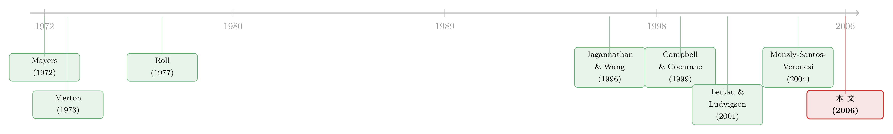

你的工资单，藏着股市下一年的收益
本文读的是 Santos & Veronesi (2006, Review of Financial Studies)：把「劳动收入占消费的比重」请进一个最小化扩展的消费资产定价模型后，这个纯宏观、可直接观测的变量，既能在时间序列上预测总市场的长期收益，又能作为条件 CAPM 的条件变量，把横截面上 25 个 Fama–French 组合的定价误差压到几乎为零。一个变量，两种可预测性，背后是同一个机制。
1 一个老问题，和一个被忽略的角落
资产定价里有两件让人头疼的事，几十年了还在头疼。
第一件：总市场的收益是可以预测的。用股息率、用盈利价格比、用各种利率指标去回归未来收益，都能跑出显著的系数——可这些预测变量，几乎清一色都是「股价除以某个东西」，本质上还是金融市场内部的信息在自我循环。
第二件：CAPM 在横截面上几乎是失败的。把股票按规模和账面市值比排成 25 个组合，资本资产定价模型 (capital asset pricing model, CAPM) 预测的「平均收益随 beta 线性上升」那条线，在数据里基本是平的——这就是著名的「价值溢价之谜」。
面对第二件事，最经典的辩解来自 Roll (1977)：我们拿来当「市场组合」的，不过是几大交易所上市股票的市值加权组合，它根本不是真正的市场组合——真正的市场还应该包含人力资本 (human capital)。毕竟，劳动收入大约占了消费的 75%，人力资本是财富中举足轻重的一块。顺着这条思路，Campbell (1996)、Jagannathan and Wang (1996) 都试着把人力资本的回报塞进「总财富回报」里去。
但本文的两位作者——Tano Santos 和 Pietro Veronesi——想说的是一件更微妙、也更深刻的事：
把劳动收入算进资产定价，远不止是「换一个更好的市场组合」那么简单。它要求你同时用上条件信息 (conditioning information)——也就是说，关键不只是「用哪个组合」，而是「在什么状态下去量这个 beta」。
而那个决定「状态」的变量，恰恰是一个被前人忽略的角落：劳动收入占消费的比重。
2 核心直觉：当工资养活了你，股票就不那么「危险」了
先把数学全部放下，讲一个一句话就能听懂的故事。
代表性投资者的消费有两个来源：一是工资（劳动收入 w），二是手里持有的金融资产派发的股息（D）。市场出清要求二者加起来等于总消费：
$$C_t = w_t + \sum_{i=2}^{n} D^i_t$$
现在做一个思想实验。假设某一年，绝大部分消费是靠工资养活的——也就是说，劳动收入占消费的比重很高。那么金融资产（股票）的派息只占消费里很小的一块。一个只贡献了消费里一小块的资产，它的波动跟总消费的波动之间能有多大关联？很小。而资产的风险溢价，本质上就是它和消费协动的补偿。协动小，补偿就低。
于是结论自然浮现：劳动收入占比高的时候，股票与消费的协方差被「稀释」了，投资者要求的风险溢价就低；劳动收入占比低的时候，股票成了消费的主力，协方差放大，溢价就高。
这就是全文反复打磨的那一个核心。它一口气解释了两件事：
- 时间序列：劳动收入/消费比会随经济状态起伏，于是它就该能预测总市场的未来收益。
- 横截面：既然这个比值刻画了「股票与消费的整体协方差」如何随时间变化，它就该是检验条件 CAPM 时最该用的那个条件变量。
更妙的是，作者强调：这种可预测性不需要任何额外的成分——不需要 Campbell and Cochrane (1999) 的习惯形成，不需要 Barberis, Huang, and Santos (2001) 的「赌资效应」，也不需要 Timmermann (1993)、Veronesi (2000) 的学习机制。它只来自劳动收入占比的波动。这是一条此前文献里没人走过的可预测性来源。
接着，一个自然的问题是：这个直觉能不能被写成一个可解的一般均衡模型？这正是本文最见功力的地方。
3 模型：把「现金流」与「消费」同时驯服
3.1 偏好与禀赋
代表性投资者的瞬时效用是标准的 CRRA 形式：
$$U(C,t) = \begin{cases} e^{-\delta t}\,\dfrac{C_t^{\,1-\gamma}}{1-\gamma}, & \gamma \neq 1 \\[2mm] e^{-\delta t}\,\log(C_t), & \gamma = 1 \end{cases}$$
其中 \(\gamma\) 是相对风险厌恶系数，\(\delta\) 是主观贴现率。
难点不在偏好，而在禀赋。把 \(n\) 种现金流（第一种 \(D^1\equiv w\) 是劳动收入，其余是股息）和总消费 \(C\) 同时建模时，市场出清这条约束会把它们死死绑在一起——你不能随便给股息设一个过程，因为那会反过来决定一个可能很丑陋的消费过程。这就是多资产一般均衡模型里最棘手的地方：既要经济上合理、彼此一致，又要数学上可解、能写出可解释的价格公式。
作者的解法是直接对消费份额 \(s^i_t \equiv D^i_t / C_t\) 建模。注意第一个份额 \(s^w_t \equiv w_t/C_t\) 就是我们故事的主角——劳动收入占消费的比重。
3.2 两条关键假设
假设 1（消费过程）：
$$\frac{dC_t}{C_t} = \mu_c(s_t)\,dt + s_c'\,dB_t, \qquad \mu_c(s_t) = \bar{\mu}_c + s_t'\,q$$
这里 \(q = (\eta^1,\dots,\eta^n)'\)。
假设 2（份额过程）：份额向量 \(s_t\) 服从一个连续时间的向量自回归：
$$ds_t = \Lambda'\, s_t\, dt + I(s_t)\, S(s_t)\, dB_t$$
矩阵 \(\Lambda\) 上施加的约束（非对角元 \(\lambda_{ij}\le 0\)，每列加总为零）以及波动函数 \(S(s_t)\) 的设计，保证了两个经济上必须成立的性质：所有份额非负（\(s^i_t\ge 0\)），且永远加总为 1（\(\sum_i s^i_t = 1\)）。换句话说，总收入永远等于消费，股息永远非负，且没有任何一种资产会「吞掉」整个经济。
把这个份额过程通过伊藤引理 (Itô's lemma) 翻译回股息层面，就得到一个直观的股息增长模型：份额与消费增长协方差越高的资产，其股息的平均增速越高。值得一提的一个细节是：作者发现在数据里参数 \(\eta^i\) 极小，以至于条件期望消费增长几乎是常数——模拟中它在 2.25% 到 2.39% 之间窄窄地波动。这不是 bug，而是 feature：正是「消费增长基本恒定」让股价有了闭式解，同时把全部的时变性都干净地推给了份额 \(s_t\)。
3.3 价格：线性于股息
在这两个假设下，作者证明了（命题 1）：
$$P^i_t = b_i' \cdot D_t, \qquad b' = \big(I(\delta^e) - \Lambda'\big)^{-1}$$
也就是说，每种资产的价格都是全部股息的线性组合。资产 \(i\) 的价格主要由它自己的股息决定（\(b\) 矩阵的对角元比其他元素大一个数量级），但因为是一般均衡，别的资产的股息也会通过消费这条管道影响到它。
由此立刻得到两个极其干净的结果。总财富组合（包含人力资本在内的全部财富）在对数效用下，其「价格–消费比」是一个常数：
$$\frac{P^{TW}_t}{C_t} = \frac{1}{\delta}$$
而我们真正能在交易所买到的市场组合，它的价格–股息比则要乘上一个由劳动份额决定的修正项 \(\Phi\)：
$$\frac{P^M_t}{D^M_t} = \frac{1}{\delta}\,\Phi(s^w_t)$$
关键就在这个修正项：只有当经济恰好处在稳态（\(\bar{s}^w = s^w_t\)）时，\(\Phi(s^w_t)=1\)，市场的价格–股息比才退化成那个「教科书值」 \(1/\delta\)。一旦劳动份额偏离稳态，价格–股息比就开始随之起伏——这正是可预测性的源头。
3.4 最关键的一步：时变的风险溢价
现在到了全文的心脏。命题 2 给出了任意资产（也包括市场组合）的瞬时预期超额收益：
把它和教科书对照一下：在一个消费等于股息、且 i.i.d. 的标准模型里，股权溢价就只有第一项 \(\gamma\,\sigma_c'\sigma_c\)，是个常数。本文模型的厉害之处在于，第二项让溢价随份额 \(s_t\) 一起呼吸——而且它生成的溢价比标准 i.i.d. 设定下更大，因此还顺手缓解了 Mehra and Prescott (1985) 的股权溢价之谜。
把市场组合代进去，\(E_t[dR^M_t]\) 就成了劳动份额 \(s^w_t\) 的函数。这就是「劳动收入/消费比能预测总市场收益」在模型层面的严格表达。
于是反转出现了：人们一直在金融变量里找预测股市的钥匙，而本文说，钥匙是一个宏观、可观测、无需估计的量。这一点与 Lettau and Ludvigson (2001a) 的 cay（消费–财富比）形成有趣的对照——cay 需要从协整关系里估计出来，而劳动收入/消费比直接就在国民账户里躺着。
4 横截面：为什么「排序」还不够，必须再「条件」一下
模型还有一个漂亮的副产品，专门用来对付那 25 个组合。
在本文的设定里，按「价格除以股息」给股票排序，等价于按预期股息增长排序——而预期股息增长正是横截面预期收益差异的根源（相对份额 \(\bar{s}^i/s^i_t\) 越高，预期股息增长越高，价格–股息比也越高）。
但作者紧接着指出一个反直觉的结论：光排序是不够的。排序本身并不能捕捉平均收益的横截面离散度；你必须再用劳动收入/消费比去条件一下，才能把这种离散度完整地解释出来。换句话说，beta 不是一个固定的数，它会「看天行事」——而那个「天」，就是劳动份额。
这正呼应了 Merton (1973) 以来的一条老智慧：能预测市场收益的变量，天然就是检验横截面时该用的条件变量。（关于「时变 beta 被低估了多少」，可参见《时变的 beta，被低估了二十年的风险》；关于「风险如何随商业周期收编价值与规模」，可参见《会「看天」的 beta：当风险收编了价值与规模，动量却躲进了商业周期》。)
5 实证：一个变量，两份成绩单
时间序列。 作者把总市场收益对滞后的劳动收入/消费比做回归，发现它是长期收益的强预测变量：回归系数统计显著，调整 \(R^2\) 很大。这个结果对该比率的不同构造方式都稳健，加进股息率后依旧成立；而且在模型模拟出的数据里，劳动份额同样是长期收益的显著预测变量——理论与实证对得上。
横截面。 这是更见分晓的地方。作者在 Fama and French (1993) 那 25 个按规模和账面市值比排序的组合上，分别检验无条件 CAPM 和以劳动收入/消费比为条件变量的条件 CAPM。
无条件 CAPM 的老毛病一览无余：拟合收益与平均收益之间几乎是平的，定价误差大且显著。而换成条件版本后，拟合值与平均值漂亮地排在 45° 线上，定价误差不再显著区别于零。如表 7 所示，条件 CAPM 把那一组定价误差整体压了下去。

Table 7: details the average pricing errors for the set of 25 portfolios
更进一步，作者对模型做了大量模拟：用模型生成多资产的金融数据，按价格–股息比排成虚拟组合，再在这组「人造组合」上检验两个版本的 CAPM。模拟同样复现了无条件 CAPM 那条平坦的风险–收益关系和显著的定价误差，以及条件版本的良好表现。换句话说，「价值溢价之谜」在这个框架里，不再那么像一个谜。表 9 汇总了这些 CAPM 检验的结果。

Table 9: summarizes the results of the tests of the CAPM and its
6 文献脉络
这条研究的源头要追到 Mayers (1972)——是他最早严肃地把「不可交易资产」和人力资本写进资本市场均衡。随后 Roll (1977) 的著名批评，把矛头指向「市值加权组合不是真正的市场组合」，为后来所有「往市场里加人力资本」的工作埋下了引子。
接着，一个自然的方向是 Campbell (1996) 与 Jagannathan and Wang (1996)：他们把人力资本回报并入总财富回报，去救 CAPM。与此并行的，是 Lettau and Ludvigson (2001a, 2001b) 用消费–财富比 cay 同时在时间序列和横截面上展示了惊人的预测力。而在「机制」这一侧，Campbell and Cochrane (1999) 的习惯形成提供了另一种让溢价时变的方式。

本文最直接的近亲，是 Menzly, Santos, and Veronesi (2004, 简称 MSV)——它们共享同一类现金流模型。但两者在经济机制上恰好是镜像对立的：MSV 让风险偏好时变、而预期股息增长去解释估值；本文则把风险偏好钉死为常数，关掉了 MSV 的主引擎，转而让劳动收入/金融收入的此消彼长来驱动收益的时变。此外，MSV 做的是行业组合，本文做的是价格排序组合。沿着 MSV 这一支「把消费风险反推到每家公司」的脉络，也可参见《理论最美、却没人用的模型：把「消费风险」反推回每一家公司》。
值得一提，本文与同时期 Cochrane, Longstaff, and Santa-Clara (2004) 的「两棵树」属于同一波「在一般均衡里同时为多个资产定价」的努力——只不过「两棵树」走的是另一条路（参见《两棵树的寓言：当「i.i.d. 收益」撞上「卖不掉的股票」》）。把「可预测性」放在整个学科的中心来看，则绕不开 Cochrane 关于贴现率的那篇主席演说（参见《贴现率：资产定价的中心议题》）。
7 评论与延伸（Q&A + 研究方向）
(a) 几个可能的疑问
Q：这跟「把人力资本加进市场组合」（Jagannathan–Wang 那套）到底差在哪？
差在「不只是换组合，还要条件化」。前者本质上是在重新定义市场组合的成分；本文证明，即便你定义了正确的总财富组合，无条件 CAPM 仍然不成立——你必须用劳动收入/消费比作为条件信息去修正 beta。机制是一样的源头（劳动 vs 金融收入），但落点是「条件 CAPM」而非「换分母」。
Q：劳动收入/消费比和 Lettau–Ludvigson 的 cay 是不是一回事？
不是。
cay是从消费与（人力+金融）财富的协整关系里估计出来的残差，依赖估计且会有前视问题；本文的劳动收入/消费比是国民账户里直接可观测的宏观量，不需要估计。两者精神相通——都说「消费和劳动收入里藏着长期估值信息」——但构造逻辑完全不同。
Q：模型为什么要把条件期望消费增长做成「几乎常数」（2.25%–2.39%）？这不是把消费风险关掉了吗？
恰恰相反，关掉的是消费增长的可预测性，而不是消费风险。消费的扩散项 \(s_c'\,dB\) 仍在，溢价里的 \(\gamma\sigma_c'\sigma_c\) 依旧。让漂移近乎恒定，是为了换来股价的闭式解，并把全部时变性干净地交给份额 \(s_t\)——这是一个「为可解性付出的代价」，而作者论证这个代价在数据上很小。
Q：「价值溢价之谜」真的被解决了吗，还是只是被「条件化」掩盖了？
作者的措辞很克制——「不再那么像一个谜」。条件 CAPM 把定价误差压到不显著，且模拟能复现无条件版本的失败与条件版本的成功，这是相当强的内部一致性证据。但 Lewellen and Nagel (2003) 早就警告：条件 CAPM 用事后实现的条件变量去拟合，容易「事后诸葛亮」。这是悬在所有条件 CAPM 头上的一把剑。
Q：劳动份额在数据里波动得够大吗？如果它几乎不动，整套机制就空转了。
这是实证的命门。机制的全部力量都来自 \(s^w_t\) 偏离稳态 \(\bar{s}^w\) 的幅度。如果劳动收入占消费的比重在样本期内非常稳定，那么 \(\Phi(s^w_t)\approx 1\)，可预测性就微乎其微。作者报告该比率确实有足够的低频波动，才支撑起「强预测 + 大 \(R^2\)」——但读者有理由追问这种波动的来源与持续性。
Q：用对数效用（\(\gamma=1\)）讲故事，会不会过于特殊？
对数效用下条件 CAPM 精确成立，beta 有闭式解，便于讲清直觉。作者也说明，当 \(\gamma\neq 1\) 时条件 CAPM 不再精确成立，但近似成立。所以对数案例是「教学用的干净版本」，结论的定性部分并不依赖它。
(b) 几个可能的研究问题与提案
1. 把这套机制搬到公司债/信用市场。
【经济故事】信用利差里有一块强烈的时变风险溢价。如果「劳动收入/消费比」刻画了投资者对系统性消费风险的承受力，那它也该预测信用利差的时间序列变动，尤其是高收益债的那部分。机制：劳动份额高时，债券违约损失对消费的边际冲击被稀释，要求的信用溢价低。 【可行性】高。数据现成（BEA 国民账户的劳动收入与消费、ICE/TRACE 的信用利差），识别用长期预测回归 + 控制传统宏观变量（期限利差、失业率）。难点是与已有信用周期变量的区分度。
2. 外资持有人会不会「污染」这条劳动收入渠道？
【经济故事】本文是封闭经济、代表性投资者。但美国股市有大量外国持有人，他们的消费/劳动收入与美国国民账户脱钩。当外资份额上升时，「美国劳动收入/美国消费」对边际投资者的代表性下降，预测力是否减弱？ 【可行性】中。需要 TIC/Flow of Funds 的外资持股份额，按外资占比分时期或分横截面做交互回归。识别上的挑战是外资份额本身可能与风险溢价内生。
3. 用微观工资数据替代宏观劳动收入。
【经济故事】宏观劳动收入掩盖了大量横截面异质性。若某些行业/地区的工资与某类股票的现金流高度协动，本文的「条件协方差」机制就该在这些子样本里更强。 【可行性】中。需要 QCEW 或 LEHD 级别的工资数据匹配到行业组合。doable，但把「行业工资」干净地映射到「投资者消费风险」需要较强的结构假设。
4. 流动性危机中的劳动份额。
【经济故事】2008、2020 这类危机里，劳动收入相对消费骤降（失业 + 政府转移支付），本文机制预测此时股票溢价应飙升。可以把模型当成一个透镜，去看危机窗口里劳动份额冲击与已实现溢价的对应。 【可行性】高（描述性）/ 低（因果）。高频对照很容易做，但危机期内生性极强，难以宣称因果，只能作为机制的「压力测试」。
8 参考文献与我的判断
我的判断。 本文最漂亮的地方，是它用一个最小化扩展——只是承认消费里有一块来自工资——就同时撬动了时间序列和横截面两种可预测性，而且预测变量是宏观、可观测、无需估计的。这种「一个机制、两个战场」的统一感，是顶级理论实证论文的标志。它也比 MSV 更进一步地把「价格排序」这件事在模型里讲透了。
但我对识别有两点保留。其一，所有条件 CAPM 都逃不开 Lewellen–Nagel 的批评：用事后实现的条件变量拟合横截面，区分「真机制」和「过度拟合」很难，本文虽有模拟支撑，仍非铁证。其二，整套力量系于劳动份额 \(s^w_t\) 的低频波动，而这种波动的统计性质（持续性、近单位根）会让长期预测回归的标准误严重失真——这正是 Stambaugh 类偏差最爱出没的地方。
后续我想看到的： 一是用样本外（out-of-sample）和子样本稳健性，把「大 \(R^2\)」从「小样本幻觉」里摘干净；二是把这条渠道推到信用市场和国际市场，看它在边际投资者结构不同的地方是否依旧成立。
参考文献
- Barberis, N., M. Huang, and T. Santos (2001). Prospect Theory and Asset Prices. Quarterly Journal of Economics 116(1), 1–53.
- Campbell, J. Y. (1996). Understanding Risk and Return. Journal of Political Economy 104(2), 298–345.
- Campbell, J. Y., and J. H. Cochrane (1999). By Force of Habit: A Consumption-Based Explanation of Aggregate Stock Market Behavior. Journal of Political Economy 107(2), 205–251.
- Cochrane, J. H., F. A. Longstaff, and P. Santa-Clara (2004). Two Trees. Working paper, University of Chicago.
- Fama, E. F., and K. R. French (1992). The Cross-Section of Expected Returns. Journal of Finance 47, 427–465.
- Fama, E. F., and K. R. French (1993). Common Risk Factors in the Returns of Stocks and Bonds. Journal of Financial Economics 33, 3–56.
- Jagannathan, R., and Z. Wang (1996). The Conditional CAPM and the Cross-Section of Expected Returns. Journal of Finance 51(1), 3–53.
- Lettau, M., and S. Ludvigson (2001a). Consumption, Aggregate Wealth, and Expected Returns. Journal of Finance 55(3), 815–849.
- Lettau, M., and S. Ludvigson (2001b). Resurrecting the (C)CAPM: A Cross-Sectional Test When Risk Premia Are Time-Varying. Journal of Political Economy 109(6), 1238–1287.
- Lewellen, J., and S. Nagel (2003). The Conditional CAPM Does Not Explain Asset-Pricing Anomalies. Working paper, MIT.
- Mayers, D. (1972). Non-marketable Assets and Capital Market Equilibrium under Uncertainty. In M. Jensen (ed.), Studies in the Theory of Capital Markets, Praeger, 223–248.
- Mehra, R., and E. Prescott (1985). The Equity Premium: A Puzzle. Journal of Monetary Economics 15, 145–161.
- Menzly, L., T. Santos, and P. Veronesi (2004). Understanding Predictability. Journal of Political Economy 112(1), 1–47.
- Merton, R. (1973). An Intertemporal Capital Asset Pricing Model. Econometrica 41, 867–887.
- Roll, R. (1977). A Critique of the Asset Pricing Theory's Tests: Part I. Journal of Financial Economics 4, 129–176.
- Rubinstein, M. (1976). The Valuation of Uncertain Income Streams and the Price of Options. Bell Journal of Economics 7, 407–425.
- Santos, T., and P. Veronesi (2006). Labor Income and Predictable Stock Returns. Review of Financial Studies 19(1), 1–44.
- Timmermann, A. (1993). How Learning in Financial Markets Generates Excess Volatility and Predictability in Stock Prices. Quarterly Journal of Economics 108, 1135–1145.